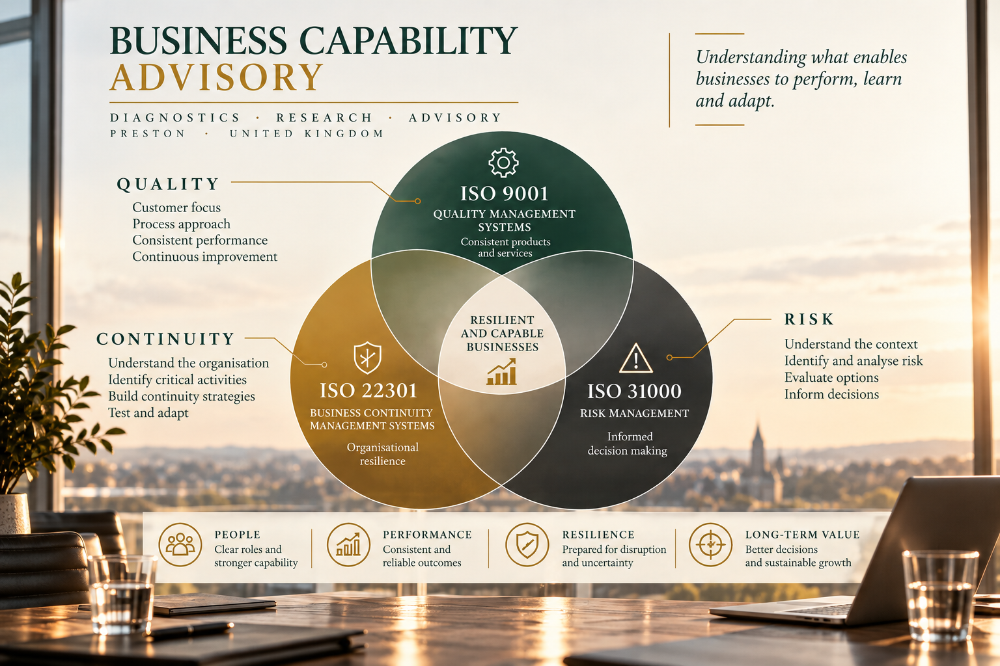
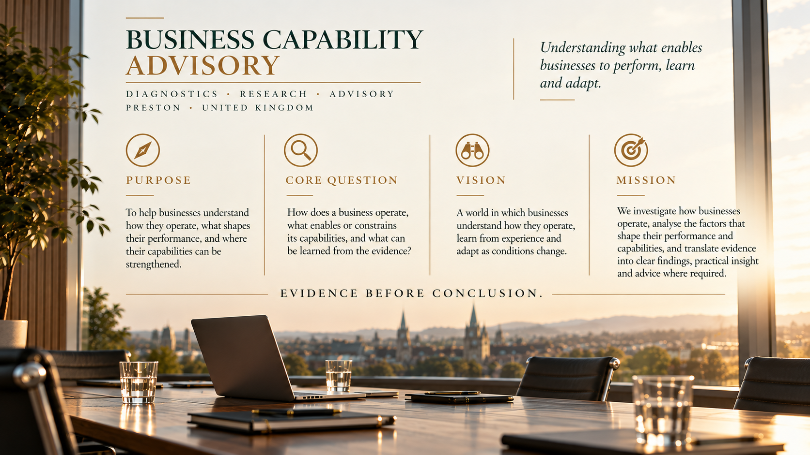

01 / DIAGNOSTICS
See the system behind the symptoms.
Examine how processes, responsibilities, management practices and organisational conditions shape day-to-day performance.
BCA works at two connected levels: strengthening management systems and examining the wider organisational conditions that shape capability, performance and adaptation.
Organisations often have more data, procedures and measures than they have understanding. Our work begins by clarifying the question, examining relevant evidence and identifying what can reasonably be concluded.
Examine how processes, responsibilities, management practices and organisational conditions shape day-to-day performance.
Structured inquiry into a defined business question. A study can conclude with findings alone, without automatically leading to recommendations or implementation.
Where requested, translate findings into options, priorities and practical next steps while keeping assumptions and uncertainty visible.
BCA works at two connected levels: strengthening management systems and examining the wider organisational conditions that shape capability, performance and adaptation.
Support to assess and improve quality management, with attention to how processes and management practices contribute to consistent performance.
Examine disruption, identify critical activities, consider recovery requirements and develop organisational readiness to respond and adapt.
Structured examination of context, uncertainty and possible outcomes to support the evaluation of options and informed decisions.
Design and development of connected management system arrangements, considering how requirements, processes and responsibilities work together.
Examine how an organisation operates, including the conditions that enable or constrain its capabilities and the relationships behind observed outcomes.
Structured investigation of a defined business question, distinguishing evidence, interpretation, assumptions and areas of uncertainty.
Work with data, experience and emerging signals to develop clearer interpretations and support learning under changing conditions.
Facilitated learning and practical workshops shaped around the organisation’s questions and intended learning outcomes.
The form of work depends on the question being examined and the result required. Engagements can be commissioned separately or combined where appropriate.
Assess the current situation and identify areas that may require further investigation.
Independently examine conformity, effectiveness or the operation of a management system.
Investigate a defined business question through a structured examination of relevant evidence.
Present evidence, interpretation, conclusions and relevant limitations in a clear report.
Discuss findings, consider options and clarify possible directions for action.
Support agreed changes where implementation is included in the commissioned scope.
Build understanding and practical skills through focused sessions with individuals or teams.
A diagnostic assessment may conclude with findings rather than recommendations. Recommendations and implementation support are agreed separately, according to the question, evidence and scope of the engagement.
Organisational capability develops through connected practices. Quality, continuity and risk provide different perspectives on how a business performs, responds to disruption and makes decisions under uncertainty.

We aim to establish what the evidence supports, make the limits of interpretation visible and keep the client's context at the centre of the enquiry.

Help businesses understand how they operate, what shapes their performance and where capabilities can be strengthened.
How does a business operate, what enables or constrains its capabilities, and what can be learned from the evidence?
Businesses that understand how they operate, learn from experience and adapt as conditions change.
Investigate, analyse and translate evidence into clear findings, practical insight and advice where required.
Tell us the question you are trying to answer, the situation you are examining or the evidence you already have. We can begin by defining the scope of the enquiry.
Contact details to be added.